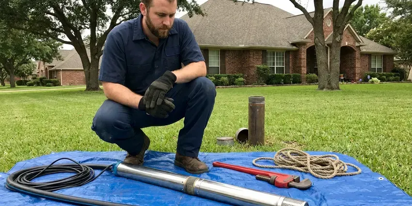
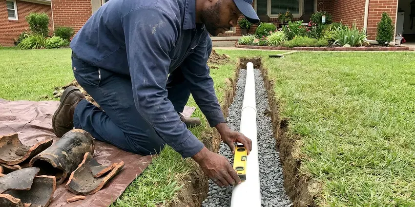
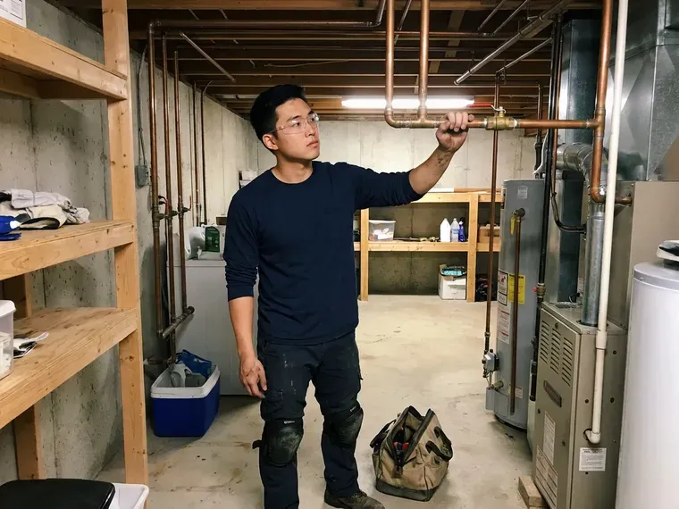

Water Line Replacement in Rawlins, WY
Main line burst in Rawlins, WY? We stop the water, locate the break and get a new line in.
- Written Quotes
- Wyoming Licensed Plumbers
- Upfront Pricing
- Licensed Plumbers
Main Line Leaking in Rawlins, WY? We Can Help.
We pull the permit and book the inspector for you.
Replacing Main Water Lines in Rawlins, WY
JKV Plumbing replaces the line, not just the leak. Two holes, one at the meter and one at the foundation. New pipe goes in as one continuous piece where possible, which means no buried couplings left to fail later, and we finish with a pressure test plus a check of each faucet.
Some of what we do:
- Pressure reducing valve and main shutoff installs
- Boring under driveways, walks and mature trees
- HDPE pipe for trenchless pulls

Additional Plumbing Replacement Services in Rawlins, WY
When repairs are no longer enough, our replacement services in Rawlins, WY deliver durable upgrades that restore full performance.




Well Pump Replacement near Rawlins

Sewer Replacement near Rawlins

Customers
Why Choose JKV Plumbing for Water Line Replacement in Rawlins, WY?
We test before we sell you anything. With every fixture off, we watch the meter for movement. If it is, we listen along the line with acoustic gear and sometimes run a tracer gas, so the dig happens in one spot. Repair or replace, you hear our reasoning first.
- Right Pipe, PEX or Type K copper rated for direct burial, sized for the house you have.
- Leak Found First, We pin down the leak with a meter test and acoustic gear before any digging starts.
- New Shutoff, A full-port ball valve replaces the old gate valve at the house.
Citywide Coverage
From the edge of Rawlins to the center of town, JKV Plumbing handles main line work for houses, duplexes and small commercial buildings. We start every job the same way, at the meter. Bigger buildings take more planning but follow the same steps.
Experienced Team
Every plumber here knows how to make up a copper flare, heat-fuse poly pipe, and crimp PEX the right way with a calibrated tool. Joints are the weak point, so they get the most attention. Every line gets a pressure test before backfill.
Safety-First Approach
Backflow protection matters on any service that also feeds a lawn sprinkler system, a boiler, a pool fill or a fire line. We look at existing devices and current requirements. If a test is required, we arrange it and send the report. It protects the neighbors' water too.
Trusted Certified Rawlins Plumbing Services Professionals
At JKV Plumbing, we are proud to offer certified plumbing services throughout Rawlins, WY. Those papers on the wall mean something. Our plumbers hold recognized industry credentials, and they follow strict safety and quality rules on every repair, installation and maintenance call we run.
Call Us Now PHCC Plumbing Contractor Recognition
PHCC Plumbing Contractor Recognition Better Business Bureau (BBB) Accreditation
Better Business Bureau (BBB) Accreditation Angi Certified Pro
Angi Certified Pro ISO 9001 Quality Management Certification
ISO 9001 Quality Management CertificationService Line Replacement Options in Rawlins, WY
Commercial Water Line Replacement in Rawlins
Larger buildings bring larger pipe, deeper trenches and more inspection steps. We handle the backflow test and certification paperwork. Trench shoring comes into play below five feet, and we plan the work so the building is without water for hours, not days, often running a temporary supply while the new line is tied in. Night work is possible.

Pipe Bursting and Pulling in Rawlins, WY
Bursting fits old cast iron or galvanized lines that will shatter under the head. Pulling suits softer pipe like poly or copper. Either way the new pipe follows the old path, which matters when the route runs under a patio or a neighbor's fence, and the yard work shrinks to two pits. Rock can stop it.
Water Line Materials We Install in Rawlins, WY
Our trucks carry Type K copper, PEX-a and HDPE. Each has a place. Copper suits short runs and high pressure, PEX handles long runs with bends, and HDPE is the usual pick for trenchless pulls and bores, where we need a tough, fused pipe that can be dragged a long way. All of it is listed for drinking water, meeting NSF 61.
Water Line Upgrades and Code Compliance in Rawlins, WY
A lot of older houses were fed with a 1/2-inch or 3/4-inch line that was fine for one bathroom. Add a second bath and a dishwasher and it falls short. When we replace the line we size it to your fixture count, which often means going to 1-inch, and bring the shutoff, depth and backflow pieces up to what code asks for today. Better pressure upstairs.
Commercial Water Service Replacement in Rawlins
Strip centers, churches and small apartment buildings each come with their own wrinkles. A single meter may feed six or eight units. We map where each branch goes before cutting anything, coordinate with the utility for any work at the meter, and handle the permit, backflow test and inspection so the owner gets one point of contact. Paperwork included.
Copper Water Line Installation in Rawlins
Type K copper is the thick-wall grade made for burial. It handles high street pressure without complaint. We bed it in sand, keep it away from sharp rock, and sleeve it where it passes through a foundation wall, because concrete and copper rubbing together for twenty years eventually wear a hole. It costs more than PEX.
PEX Service Lines for Long Runs in Rawlins
We buy PEX in long coils. That makes it the easy pick when the meter sits out at the road and the house is set far back, because one coil covers the whole run without a joint. Fewer joints underground means fewer places a leak can start, and it is the joints that usually fail first.

PEX Water Line Replacement in Rawlins
PEX costs less than copper and goes in faster, which matters on a long run. It does not corrode or build scale. We use PEX-a or PEX rated for direct burial, connect it with brass or poly fittings that are approved underground, and lay tracer wire on top so a locator can find it later, since plastic pipe does not show up on a metal detector. Cheap insurance.
Water Line Replacement Near Rawlins, WY
Need water line replacement near you? JKV Plumbing serves Rawlins with leak location, line replacement and yard restoration, usually with an estimate on the calendar within a couple of days. Let us know where the meter is and where the pipe comes in. Those two points set the price.
Being local means we know how service lines in Rawlins are usually laid out. Some run straight from the street, others jog around old additions. That helps us price trenchless work honestly, guess the depth of the old pipe before we dig, and pick a route that saves the trees. Short drive, long memory.
JKV Plumbing at a Glance
- Licensed and insured plumbers serving Rawlins, WY
- Same-day appointments and 24/7 emergency response
- Upfront, flat-rate pricing before work begins
- 4.9-star rated by 782+ Wyoming customers
Rawlins Map
Rawlins Information
- Population
- 8,032
- Area codes
- Local
- Service area
- Rawlins and towns within a 40 mile drive
- Nearby
- Casper, Laramie, Rock Springs, Riverton
Buried service pipe in Rawlins, WY takes a beating from settling soil and seasonal cold, and old galvanized or poly lines give out first.
Expert Services
Call JKV Plumbing for honest, reliable plumbing from people who know the trade in Rawlins, WY.
Our Specialized Plumbing Services in Rawlins, WY
At JKV Plumbing, you get every kind of plumbing service from one company across Rawlins, WY. We go from leak detection all the way to full system installations, for homes and commercial buildings, and we do it quickly at a fair price. Here are the core services we offer:


How We Replace a Water Line in Rawlins, WY
Planning takes more time than digging on most jobs.
Call Us
Call (307) 393-4049 and tell us what changed. We book leak detection.
Find and Plan
We pin down the leak and mark utilities. Then we choose the method.
Replace and Restore
We install the new line, test it and restore the yard. We check pressure at a few faucets.
Frequently Asked Questions About Water Line Replacement in Rawlins
For a typical house, expect something in the $2,500 to $8,000 range. Length and method move the number the most, because a trenchless pull under a driveway costs more per foot than an open trench across a lawn but saves the cost of new concrete. Copper adds a bit. You get a written number.
Both commonly reach 50 years. Copper has the longer track record in the ground. PEX is newer but does not corrode, and the main things that kill it are UV light before burial and sharp rock, which a good crew prevents. Bedding counts.
Yes, in most cases. Gate valves from decades ago often will not close all the way. Since the water is already off and the line is open, adding a full-port ball valve takes little extra time, and you get a valve that closes with a quarter turn. Small cost, big help.
Repair fixes one spot. A short piece of new pipe goes in where the leak was. Replacement swaps the entire run from meter to house, which is the better choice once the old pipe is corroded everywhere or has failed more than once, since the next leak is usually a few feet away.
One or two days for most houses. Long rural runs take longer.
Start with the meter. Close the main shutoff at the house and watch the dial. A moving dial with the main closed means the leak is outside. If it stops, the leak is inside, often a running toilet or a slab leak, and that is a different repair.
For a few hours, usually. Most of the digging happens with your water still on. The shutdown comes when we tie the new line in at the meter and the house, which is typically a two- to four-hour window. Overnight outages are rare.
Yes, almost always. The building department wants to see the open trench. They check depth, material, bedding and the connection at the house, and we handle the application, the paperwork and the inspection date so you do not have to call the office yourself.
What People Are Saying About Our Plumbing Experts?
Megan L.
Our upstairs tub drained so slowly that every shower turned into a bath. JKV Plumbing pulled a wad of hair out of the stopper and then snaked the line past the trap. Three months later it still drains fast.
Drain Cleaning · Lander, WY
Nathan E.
Our tankless heater kept throwing an error code and shutting off mid shower. The tech flushed the heat exchanger, which was full of scale, and replaced a bad flow sensor. Hot water has been steady for half a year now.
Water Heater Repair · Laramie, WYMonica A.
Our water bill nearly doubled in one month with no change in how we used water. The tech checked the meter, heard the leak under the hallway with his equipment, and opened a hole about a foot square. Fixed the same day.
Slab Leak Repair · Rock Springs, WY
Patricia H.
We had a slab leak that two other companies could not find. JKV Plumbing located it in under an hour with a listening device. They rerouted the line through the attic instead of breaking up the floor, so we kept our kitchen tile.
Slab Leak Repair · Rock Springs, WYKaren W.
After our third pinhole leak in copper, we stopped patching. JKV Plumbing gave us a written plan room by room and repiped the house in PEX while we stayed in it. The crew covered our floors every morning and cleaned up every night.
Repiping · Riverton, WY
James P.
Our restaurant had a slow leak at the hand sink that was rotting the cabinet base. JKV Plumbing came in at six in the morning before prep, replaced the trap and both supply lines, and was packed up before my first cook clocked in.
Commercial Plumbing · Rawlins, WY